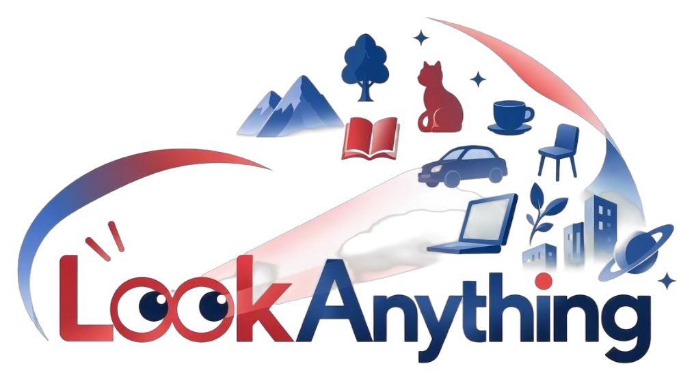

Anonymous submission · Under review

A Generalist Foundation Model
for Gaze Target Detection
LookAnything unifies gaze localization, description, and reasoning in one language-conditioned model. Learnable gaze-prior queries absorb scene depth, head grounding, and target geometry, so inference does not need head crops or depth maps.
This video could not be loaded.
A Unitree G1 carries LookAnything through real scenes. The reel covers social interaction, shopping assistance, a tabletop setting, point, box, heatmap, and language outputs, plus static and moving viewpoints.
01 / Overview
One model for where, what, and whether a look is answerable.
Specialist gaze followers are usually trained in one domain, depend on cropped heads or depth, and stop at a heatmap. LookAnything is trained across domains and tasks, and answers in the form the question asks for.
The limitation
Custom stacks, coarse outputs.
Head crops and depth maps add cascading error and extra runtime. A heatmap alone has no instance-level meaning, so the same model cannot describe the target, find who is looking, or refuse a bad question.
The approach
Priors in the latent space.
Gaze-prior queries learn depth, source-head grounding, and target geometry during training. At inference the language head reads those representations and emits a point, a box, a heatmap, or text.
02 / Model
Gaze-prior queries, then one answer stream.
An image and an instruction are encoded, three groups of learnable queries are appended, and a language backbone turns them into a single token sequence. Auxiliary decoders supervise the queries and are skipped at inference.
Depth
Scene structure
Depth queries reconstruct relative monocular depth with a lightweight decoder. The loss is scale-invariant, so the model keeps layout rather than a metric scale.
Head
Source grounding
Head queries predict a binary mask of the looking person. That mask is the spatial anchor for later localization and for questions about who is looking.
Target
Where the look lands
Gaze queries predict a heatmap, a normalized point, and a box. The heatmap uses the visual tokens. The point and box heads regress coordinates directly.
Block-wise attention
Keep the three priors from rewriting each other.
If depth, head, and gaze queries could freely attend across groups, a dense depth map or a head contour could shortcut the target representation. Each group attends to the image, the question, and itself. Answer tokens attend to all three, so the language head still sees the full gaze context.
03 / HoliGaze
A corpus and a benchmark for holistic gaze.
Existing gaze datasets each cover one slice of the problem. HoliGaze standardizes eight of them into 311K pairs: 303K for training and 8K human-checked questions over 6,143 images.
GTL · GTD
Target
Given a person, predict a point, a box, or a description of what they look at. Training also includes a box-referred point task.
GSL · GSD
Source
Given a target, find every observer’s head box, or describe the people who are looking at it.
GDO · GDR
Space
Compare whether the head is closer or farther than the target, and classify gaze into four camera-relative directions.
GCD
Contact
Decide whether a specified person is looking at the camera. This is the social signal an embodied agent needs first.
ARR · PV
Answerability
Refuse a referring expression that matches more than one entity, or a target that is outside the frame.
Eight source datasets, from static photos to video and retail scenes, are mapped into one schema.
SAM3 fills head masks, Depth Anything v3 fills depth, and Qwen3-VL writes referring expressions.
Templates build open and multiple-choice questions. Distractors come from entity expansion, attribute edits, and box permutation.
The 8K benchmark is reviewed by people for description accuracy, unique references, distractors, and depth polarity.
311KQ&A pairs
171KImages
187KGaze interactions
8Source datasets
0.70%Bench edits
| Dataset | Samples | Tasks | Text ref. | Box ref. | Point | Box | Text | MCQ | openQA |
|---|---|---|---|---|---|---|---|---|---|
| GazeFollow NeurIPS 2015 | 130K | 1 | – | Yes | Yes | – | – | – | – |
| VideoCoAtt CVPR 2018 | 138K | 1 | – | – | Yes | Yes | – | – | – |
| VAT CVPR 2020 | 165K | 2 | – | Yes | Yes | – | – | – | – |
| GOO CVPRW 2021 | 172K | 2 | – | Yes | Yes | Yes | – | – | – |
| ChildPlay ICCV 2023 | 258K | 2 | – | Yes | Yes | – | – | – | – |
| GazeHOI NeurIPS 2024 | 56K | 2 | – | Yes | Yes | – | Yes | – | – |
| VL4Gaze arXiv 2025 | 489K | 4 | Yes | – | Yes | – | Yes | – | Yes |
| Gaze-Co CVPR 2026 | 120K | 1 | Yes | – | Yes | Yes | – | – | – |
| HoliGaze This work | 311K | 9 | Yes | Yes | Yes | Yes | Yes | Yes | Yes |
04 / Results
Ahead of generalist VLMs, level with specialists.
HoliGaze-Bench tests localization, description, spatial reasoning, social contact, and refusal. Five conventional benchmarks test whether that breadth costs ordinary gaze-target accuracy.
HoliGaze-Bench. Open-source and closed-source models are evaluated zero-shot. LookAnything is the 2B model trained on HoliGaze-Corpus. It is best on every column. The strongest other model in a column is underlined. Lower is better only for GTL point L₂. GTD and GSD report multiple-choice accuracy or F1 together with open-ended ROUGE-L and BLEU-4. Click a metric to sort.
Grounding is the gap.
Large closed models are strong on descriptive multiple choice and still weak at placing a point or a box. Language skill does not by itself produce gaze-conditioned coordinates.
Embodied pretraining does not transfer.
Models trained for action and spatial control do fine on contact or depth questions, and remain far behind on point and box localization.
The gain is not from scale.
Against its Qwen3-VL-2B backbone, point L₂ falls from 0.387 to 0.096. Models at 27B–38B stay below the 2B LookAnything result.
Five conventional gaze-target benchmarks
Official test splits of GazeFollow, VideoAttentionTarget, ChildPlay, GazeHOI, and GOO-Real. LookAnything is compared with specialist detectors, not prompted as a generic VLM. Average L₂ is 0.112 and average AUC is 0.939, both best in this table.
| Method | Average | VAT | GazeFollow | ChildPlay | GazeHOI | GOO-Real | ||||||||
|---|---|---|---|---|---|---|---|---|---|---|---|---|---|---|
| L₂ ↓ | AUC ↑ | L₂ ↓ | AUC ↑ | L₂ ↓ | Min L₂ ↓ | AUC ↑ | L₂ ↓ | AUC ↑ | L₂ ↓ | AUC ↑ | Acc ↑ | L₂ ↓ | AUC ↑ | |
| Recasens et al. | 0.253 | 0.809 | 0.242 | 0.789 | 0.227 | 0.155 | 0.857 | 0.292 | 0.754 | 0.259 | 0.817 | 0.371 | 0.245 | 0.829 |
| Lian et al. | 0.226 | 0.835 | 0.242 | 0.789 | 0.189 | 0.119 | 0.885 | 0.292 | 0.754 | 0.200 | 0.877 | 0.561 | 0.205 | 0.868 |
| Chong et al. | 0.172 | 0.857 | 0.126 | 0.864 | 0.138 | 0.077 | 0.923 | 0.128 | 0.858 | 0.197 | 0.869 | 0.564 | 0.272 | 0.770 |
| HGTTR | 0.224 | 0.825 | 0.266 | 0.816 | 0.169 | 0.109 | 0.847 | 0.204 | 0.859 | 0.216 | 0.824 | 0.528 | 0.265 | 0.780 |
| MADGTD | 0.172 | 0.857 | 0.128 | 0.860 | 0.138 | 0.077 | 0.925 | 0.133 | 0.866 | 0.195 | 0.870 | 0.578 | 0.265 | 0.762 |
| Gupta et al. | 0.181 | 0.867 | 0.128 | 0.898 | 0.156 | 0.091 | 0.914 | 0.144 | 0.893 | 0.198 | 0.867 | 0.556 | 0.279 | 0.765 |
| Miao et al. | 0.170 | 0.877 | 0.117 | 0.906 | 0.132 | 0.072 | 0.928 | 0.122 | 0.919 | 0.194 | 0.864 | 0.584 | 0.287 | 0.768 |
| Tafasca et al. | 0.121 | 0.921 | 0.123 | 0.904 | 0.128 | 0.065 | 0.935 | 0.112 | 0.924 | — | — | — | — | — |
| ViTGaze | 0.136 | 0.900 | 0.103 | 0.908 | 0.105 | 0.047 | 0.949 | 0.112 | 0.899 | 0.163 | 0.880 | 0.714 | 0.196 | 0.862 |
| Sharingan | 0.150 | 0.900 | 0.104 | 0.920 | 0.112 | 0.055 | 0.944 | 0.110 | 0.930 | 0.177 | 0.886 | 0.633 | 0.248 | 0.819 |
| Gaze-LLE (ViT-B) | 0.132 | 0.930 | 0.105 | 0.932 | 0.104 | 0.045 | 0.956 | 0.115 | 0.945 | 0.162 | 0.906 | 0.705 | 0.175 | 0.909 |
| Gaze-LLE (ViT-L) | 0.127 | 0.929 | 0.100 | 0.937 | 0.098 | 0.041 | 0.958 | 0.102 | 0.950 | 0.160 | 0.907 | 0.710 | 0.173 | 0.915 |
| GazeAnywhere | 0.183 | 0.897 | 0.236 | 0.845 | 0.179 | 0.115 | 0.923 | 0.139 | 0.916 | 0.196 | 0.885 | 0.625 | 0.165 | 0.918 |
| LookAnything | 0.112 | 0.939 | 0.100 | 0.940 | 0.094 | 0.052 | 0.943 | 0.096 | 0.953 | 0.132 | 0.939 | 0.759 | 0.138 | 0.919 |
Bold is best and underline is second best, including a tie on VAT L₂. Tafasca et al. do not report GazeHOI or GOO-Real. AUC uses the query-based heatmap.
05 / Real world
The same model on a Unitree G1.
These clips are outside the training domains. From the robot’s egocentric camera, LookAnything grounds the source head, marks whether that person is looking at the robot, and follows the gaze target while the camera stays still or moves.
Scenarios
Three settings, one policy. The corner flag is gaze-contact with the robot. The blue overlay is the predicted source head.
This clip could not be loaded.
Viewpoint
The same grounding holds when the camera is fixed and when the robot is walking.
This clip could not be loaded.
Output format
The question decides the output. The same scene family can be answered with a point, a box, a heatmap, or a selection among described items.
This clip could not be loaded.